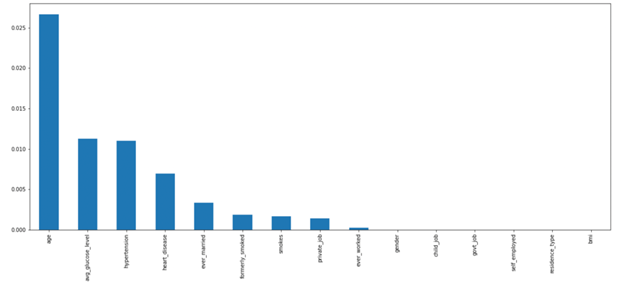
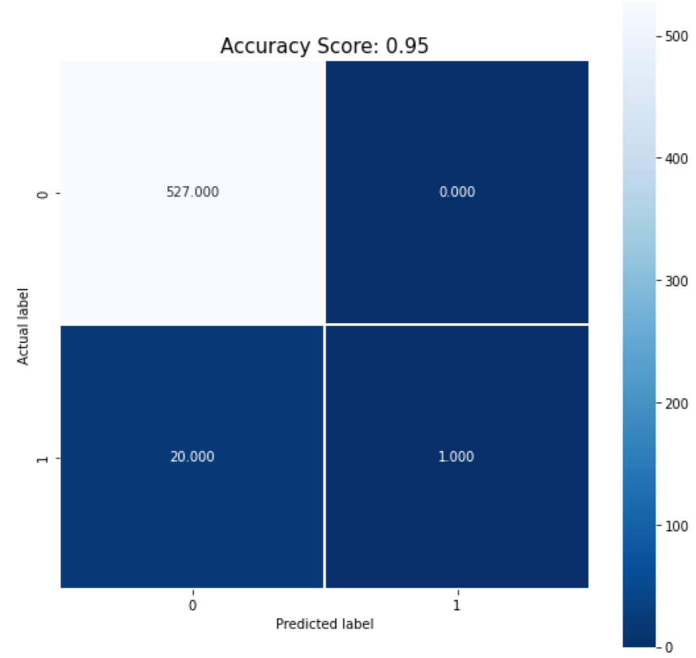

A stroke occurs when there is a loss of blood flow to the brain. The brain needs a constant supply of Oxygen, so a lack of blood for even a couple of minutes causes brain cells to die. This can lead to long term problems for stroke victims such as trouble speaking, eating, remembering, walking or seeing. There are two types of stroke, ischemic and hemorrhagic strokes. A stroke happens to be the second leading cause of death in the world (according to WHO) [1]. Some of the risk factors for stroke include age, high blood pressure, smoking and obesity [2]. We hope to use modern machine learning techniques in order to predict whether a patient will have a stroke based on patient information (such as age, gender, and BMI) found in our dataset [3].
Problem Definition:
The primary task is binary classification. We are given patient information and we want to predict if they are likely to have a stroke or not based on their medical information. If properly implemented, this would hopefully help people know how they could take actions in their daily lives to decrease the likelihood of a stroke.
Methods:
The stroke prediction is achieved through two different models: logistic regression and a neural network. We started with logistic regression because this is one of the
simplest machine learning algorithms and it is highly suitable for binary classification. Additionally, in a low dimensional dataset, logistic regression is less likely to overfit.
However, this model may not be ideal as it is difficult to capture
complex relationships with logistic regression, and it is sensitive to outliers. The other model we trained was a neural network. This was advantageous as neutral networks
are good for nonlinear data with a large number of inputs. Neural nets can also be trained for any number of inputs and layers, and can accurately predict interactions between features, and there are many algorithms available for training. A disadvantage of neural nets is that the user is unable to visualize the effect of the features on the target, and consequently, they are commonly referred to as a "black box".
Results/Discussion:
As mentioned above, we used binary classification to classify if the patient is likely have a stroke or not. We looked into variables on patient health such as gender, age, BMI, glucose levels, and histories of hypertension, heart disease, and smoking. However, social and economic factors can also influence the chance of an
having a stroke [2]. Because of this, we have considered factors such as the individual's marital status, employment type, and residential area. With these features, we determined if an individual is likely to have a stroke. By using accuracy, recall, precision, and F1 scores, we were able to compare our models and analyze how well they predicts strokes.
Logistic Regression Model:
The first step in training the logistic regression model was cleaning the data. Variables on patient health such as gender, age, BMI, histories of heart disease, and smoking are some of the
features when considering the possibility of a stroke. The original data set had some rows with missing data. To ensure we did not train/test with missing data, we had removed these entries.
Along with this, gender, marital status and residence types were converted to a binary value and an individual's smoking status was converted to an integer value.
The next step was preprocessing the data. The first method we used for our logistic regression model was L1-regularization, as it was found that this pairs well with logistic regression.
After running the code for this, it was found that age most strongly correlates with the likelihood of stroke, while some of the other variables were redundant.
To explore which of the other variables presented valuable information, we used Mutual Information Gain. We chose this method because it is a neutral solution that can be applied to various kinds of ML methods and it is also fast.
With this method we were able to determine the extent to which each feature affected the dependent variable of having a stroke.
We determined that age had the highest effect and that (in order of most significant to least significant effect on stroke) average glucose level,
hypertension, heart disease, ever married, formerly smoked, smokes, private job, and ever worked were the only variables that had a significant impact on stroke likelihood (
).
Therefore we kept all of these features, and we decided that it would be appropriate to remove the other features. The bar chart below shows the contribution of each feature to the target (stroke likelihood).

Figure 1: By using Mutual Information Gain, we can see the correlation between the features and having a stroke
(age, avg glucose level, hypertension, heart disease, ever_married, formerly smoked, smokes, private_ job, ever worked, gender, child_job, govt job, self employed, residence type, bmi) from left to right
We split the data into two sets. 80% of the data was used to train the data while the remaining 20% was used for testing.
We used cross-validation to evaluate the logistic regression model. By setting cv=5, we iterate and average the five accuracies to get an average model accuracy of 95%.
Based on the confusion matrix in Figure 2, you can see no false positive, giving a precision value of 1.

Figure 2: Confusion Matrix
Neural Network Model:
For our second model we decided to construct a binary classifier using a Neural network. We split the data into three sets. 60% of the data was used to train the model, 20% was used for testing, and the remaining 20% was used for validating. And then we trained the model using the Keras Sequential model because we were solving a binary classification problem and this model produces one output tensor. We also used the stochastic gradient descent optimizer and the binary cross entropy loss function for training this model.
The two plots below show the results of training the neural network on our data. As you can see, in the first plot and after a certain amount of time, the accuracy began to plateau slightly above 95%, which was why we cut the training short before loss had the chance to plateau. We also did this to make sure that the model did not overfit.
Figure 3: Accuracy Graph
Figure 4: Loss Graph
Once the neural network was trained, we used our validation dataset to evaluate the neural network and we found that our model had an accuracy of 95.5%. Also, as you can see based on the confusion matrix below, there were no false positives, which indicated a precision value of 1. This is defining precision as the number of true positives divided by the total number of positives, or from the patients we predicted as positive, how many were actually positive.
Figure 5: Confusion matrix
Conclusion:
The neural network and the logistic regression models had a high accuracy when predicting stroke based on certain social and economic factors along with the individual’s health history. The neural network had an accuracy of 95.5% and it slightly outperformed the logistic regression model, which had an accuracy of 95%. Overall, both of these models achieved the goal of predicting stroke and we found it an interesting and important problem to address for the real world.
While we believe that these models are both good stroke predictors, they could definitely be improved. One area that would be worth exploring is gathering more data. This would allow us to try a wider variety of models. Additionally, tune parameters and test with different optimizers to improve performance.
Contribution table:
Page
Make GitHub Page
Craig
Compile Page
Craig
Typed 500 Word Proposal
Intro/Background
Himanish
Problem Definition
Himanish
Methods
Jacqueline & Bingqing
Results/Discussion
Sandra & Bingqing
At least 3 sources
All
Gannt Chart
Fall Sheet
Jacqueline
Fall Overview Sheet
Jacqueline
Presentation
Slides
Craig & Himanish
Script
Sandra & Bingxing
3 Minute Video
Sandra
Contribution Table
Jacqueline
Contribution table for midpoint report
Data Cleaning
Sandra, Jacqueline
Preprocessing
Jacqueline, Craig
Logistic Regression
Jacqueline
Metrics
Himanish
Report
Craig, Sandra, Jacqueline, Himanish
Git Page Update
Himanish, Sandra
Contribution table for final report
Neural Network
Sandra
Report
Jacqueline, Himanish, Craig
Git Page Update
Himanish, Craig
Final Report Video
Jacqueline
References:
The 5 Feature Selection Algorithms Every Data Scientist Should Know. https://towardsdatascience.com/the-5-feature-selection-algorithms-every-data-scientist-need-to-know-3a6b566efd2.
Brownlee, Jason. “How to Choose a Feature Selection Method for Machine Learning.” Machine Learning Mastery, 20 Aug. 2020, https://machinelearningmastery.com/feature-selection-with-real-and-categorical-data/.
Fedesoriano. (2021, January 26). Stroke prediction dataset. Kaggle. Retrieved October 4, 2022, from https://www.kaggle.com/datasets/fedesoriano/stroke-prediction-dataset
Mayo Foundation for Medical Education and Research. (2022, January 20). Stroke. Mayo Clinic. Retrieved October 4, 2022, from https://www.mayoclinic.org/diseases-conditions/stroke/symptoms-causes/syc-20350113
Risk factors for stroke. Johns Hopkins Medicine. (2021, November 15). Retrieved October 4, 2022, from https://www.hopkinsmedicine.org/health/conditions-and-diseases/stroke/risk-factors-for-stroke
World Health Organization. (n.d.). The top 10 causes of death. World Health Organization. Retrieved October 4, 2022, from https://www.who.int/news-room/fact-sheets/detail/the-top-10-causes-of-death